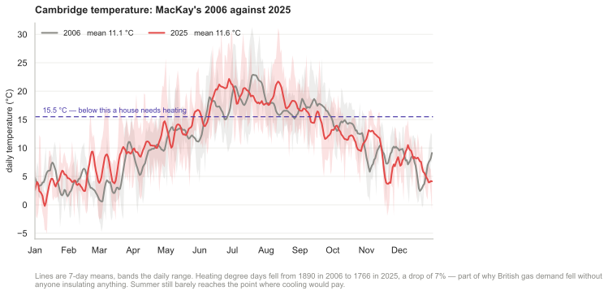
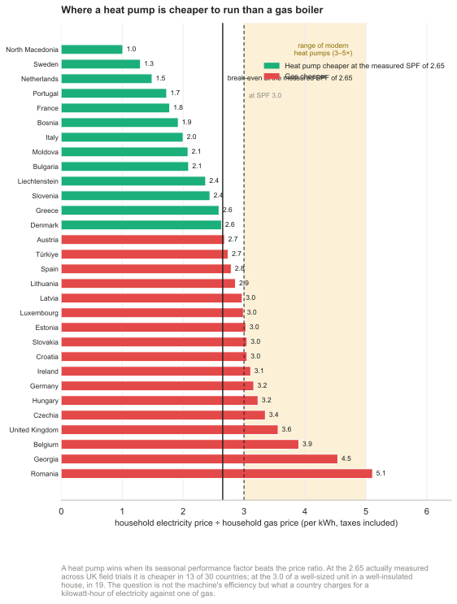

7 Heating and cooling

Figure 7.1. A flock of new houses.

Figure 7.2. The water in a bath.
This chapter explores how much power we spend controlling the temperature of our surroundings – at home and at work – and on warming or cooling our food, drink, laundry, and dirty dishes.
Domestic water heating
The biggest use of hot water in a house might be baths, showers, dishwashing, or clothes-washing – it depends on your lifestyle. Let’s estimate first the energy used by taking a hot bath.
The volume of bath-water is 50 cm × 15 cm × 150 cm ≈ 110 litre. Say the temperature of the bath is 50 °C (120 °F) and the water coming into the house is at 10 °C. The heat capacity of water, which measures how much energy is required to heat it up, is 4200 J per litre per °C. So the energy required to heat up the water by 40 °C is
4200 J/litre/°C × 110 litre × 40 °C ≈ 18 MJ ≈ 5 kWh.
So taking a bath uses about 5 kWh. For comparison, taking a shower (30 litres) uses about 1.4 kWh.
Kettles and cookers
230 V × 13 A = 3000 W
Britain, being a civilized country, has a 230 volt domestic electricity supply. With this supply, we can use an electric kettle to boil several litres of water in a couple of minutes. Such kettles have a power of 3 kW. Why 3 kW? Because this is the biggest power that a 230 volt outlet can deliver without the current exceeding the maximum permitted, 13 amps. In countries where the voltage is 110 volts, it takes twice as long to make a pot of tea.

Figure 7.3. Power consumption by a heating and cooling device.
If a household has the kettle on for 20 minutes per day, that’s an average power consumption of 1 kWh per day. (I’ll work out the next few items “per household,” with 2 people per household.)
One small ring on an electric cooker has the same power as a toaster: 1 kW. The higher-power hot plates deliver 2.3 kW. If you use two rings of the cooker on full power for half an hour per day, that corresponds to 1.6 kWh per day.
A microwave oven usually has its cooking power marked on the front: mine says 900 W, but it actually consumes about 1.4 kW. If you use the microwave for 20 minutes per day, that’s 0.5 kWh per day.
A regular oven guzzles more: about 3 kW when on full. 1 If you use the oven for one hour per day, and the oven’s on full power for half of that time, that’s 1.5 kWh per day.
| Device | power |
time per day |
energy per day |
|---|---|---|---|
| Cooking | |||
| – kettle | 3 kW | 1⁄3 h | 1 kWh/d |
| – microwave | 1.4 kW | 1⁄3 h | 0.5 kWh/d |
| – electric cooker (rings) | 3.3 kW | 1⁄2 h | 1.6 kWh/d |
| – electric oven | 3 kW | 1⁄2 h | 1.5 kWh/d |
| Cleaning | |||
| – washing machine | 2.5 kW | 1 kWh/d | |
| – tumble dryer | 2.5 kW | 0.8 h | 2 kWh/d |
| – airing-cupboard drying | 0.5 kWh/d | ||
| – washing-line drying | 0 kWh/d | ||
| – dishwasher | 2.5 kW | 1.5 kWh/d | |
| Cooling | |||
| – refrigerator | 0.02 kW | 24 h | 0.5 kWh/d |
| – freezer | 0.09 kW | 24 h | 2.3 kWh/d |
| – air-conditioning | 0.6 kW | 1 h | 0.6 kWh/d |
Table 7.4. Energy consumption figures for heating and cooling devices, per household.
Hot clothes and hot dishes
A clothes washer, dishwasher, and tumble dryer all use a power of about 2.5 kW when running.

Figure 7.5. The hot water total at both home and work – including bathing, showering, clothes washing, cookers, kettles, microwave oven, and dishwashing – is about 12 kWh per day per person. I’ve given this box a light colour to indicate that this power could be delivered by low-grade thermal energy.

Figure 7.6. A big electric heater: 2 kW.
A clothes washer uses about 80 litres of water per load, with an energy cost of about 1 kWh if the temperature is set to 40 °C. If we use an indoor airing-cupboard instead of a tumble dryer to dry clothes, heat is still required to evaporate the water – roughly 1.5 kWh to dry one load of clothes, instead of 3 kWh. 2
Totting up the estimates relating to hot water, I think it’s easy to use about 12 kWh per day per person.
Hot air – at home and at work
Now, does more power go into making hot water and hot food, or into making hot air via our buildings’ radiators?
One way to estimate the energy used per day for hot air is to imagine a building heated instead by electric fires, whose powers are more familiar to us. The power of a small electric bar fire or electric fan heater is 1 kW (24 kWh per day). In winter, you might need one of these per person to keep toasty. In summer, none. So we estimate that on average one modern person needs to use 12 kWh per day on hot air. But most people use more than they need, keeping several rooms warm simultaneously (kitchen, living room, corridor, and bathroom, say). So a plausible consumption figure for hot air is about double that: 24 kWh per day per person.
This chapter’s companion Chapter E contains a more detailed account of where the heat is going in a building; this model makes it possible to predict the heat savings from turning the thermostat down, double-glazing the windows, and so forth.

Figure 7.7. Hot air total – including domestic and workplace heating – about 24 kWh per day per person.
Warming the outdoors, and other luxuries
There’s a growing trend of warming the outdoors with patio heaters. Typical patio heaters have a power of 15 kW. So if you use one of these for a couple of hours every evening, you are using an extra 30 kWh per day.
A more modest luxury is an electric blanket. An electric blanket for a double bed uses 140 W; switching it on for one hour uses 0.14 kWh.
Cooling
Fridge and freezer
We control the temperatures not only of the hot water and hot air with which we surround ourselves, but also of the cold cupboards we squeeze into our hothouses. My fridge-freezer, pictured in figure 7.3, consumes 18 W on average – that’s roughly 0.5 kWh/d.
Air-conditioning
In countries where the temperature gets above 30 °C, air-conditioning is viewed as a necessity, and the energy cost of delivering that temperature control can be large. However, this part of the book is about British energy consumption, and Britain’s temperatures provide little need for air- conditioning (figure 7.8).

Figure 7.8. Cambridge temperature: MacKay’s 2006 against 2025. Redrawn in the 2026 revision. Heating degree days fell from 1890 to 1766, about 7%, which is part of why British gas demand fell without anyone insulating anything — and a reminder that some of the apparent efficiency gain in the national statistics is weather. Summer still barely reaches the point where cooling would pay, so MacKay’s judgement that Britain has little need of air-conditioning survives.3
An economical way to get air-conditioning is an air-source heat pump. A window-mounted electric air-conditioning unit for a single room uses 0.6 kW of electricity and (by heat-exchanger) delivers 2.6 kW of cooling. To estimate how much energy someone might use in the UK, I assumed they might switch such an air-conditioning unit on for about 12 hours per day on 30 days of the year. On the days when it’s on, the air-conditioner uses 7.2 kWh. The average consumption over the whole year is 0.6 kWh/d.

Figure 7.9. Cooling total – including a refrigerator (fridge/freezer) and a little summer air-conditioning – 1 kWh/d.
This chapter’s estimate of the energy cost of cooling – 1 kWh/d per person – includes this air-conditioning and a domestic refrigerator.

Figure 7.10. My domestic cumulative gas consumption, in kWh, each year from 1993 to 2005. The number at the top of each year’s line is the average rate of energy consumption, in kWh per day. To find out what happened in 2007, keep reading!
Society also refrigerates food on its way from field to shopping basket. I’ll estimate the power cost of the food-chain later, in Chapter 15.

Figure 7.11. Heating and cooling – about 37 units per day per person. I’ve removed the shading from this box to indicate that it represents power that could be delivered by low-grade thermal energy.
Total heating and cooling
Our rough estimate of the total energy that one person might spend on heating and cooling, including home, workplace, and cooking, is 37 kWh/d per person (12 for hot water, 24 for hot air, and 1 for cooling).
Evidence that this estimate is in the right ballpark, or perhaps a little on the low side, comes from my own domestic gas consumption, which for 12 years averaged 40 kWh per day (figure 7.10). At the time I thought I was a fairly frugal user of heating, but I wasn’t being attentive to my actual power consumption. Chapter 21 will reveal how much power I saved once I started paying attention.
Since heating is a big item in our consumption stack, let’s check my estimates against some national statistics. Nationally, the average domestic consumption for space heating, water, and cooking in the year 2000 was 21 kWh per day per person, and consumption in the service sector for heating, cooling, catering, and hot water was 8.5 kWh/d/p. 4 For an estimate of workplace heating, let’s take the gas consumption of the University of Cambridge in 2006–7: 16 kWh/d per employee. 5
Totting up these three numbers, a second guess for the national spend on heating is 21 + 8.5 + 16 ≈ 45 kWh/d per person, if Cambridge University is a normal workplace. Good, that’s reassuringly close to our first guess of 37 kWh/d.
What happened to heating
A section added in the 2026 revision. This is the largest single item in the book’s demand stack, and it is the one that has moved most since 2008 — in two different ways. The heat a British house needs has fallen. And the energy required to deliver that heat has fallen much further, because the machine changed.
The demand fell
MacKay’s 37 kWh/d was written when Britain burned 3.52 EJ of gas a year. In 2025 it burned 2.20 EJ, a fall of 37%, and per head the fall is steeper still because the population grew: from about 43 to 24 kWh/d per person of gas for everything — power stations, industry and homes together.6 For homes specifically, the government’s own accounting puts gas consumption per household down 43% since 2008, with three-quarters of what remains going on space heating.7
Very little of that is virtue. Some is insulation and condensing boilers, which is the real efficiency MacKay’s Chapter E is about. Some is warmer winters. A great deal of the sharpest movement — a 17% drop in 2022 alone — is people turning the thermostat down because they could not afford the gas, which is a reduction in comfort rather than in waste, and belongs in a different column of the ledger.
The heat pump changes the arithmetic, not the heat
The important change is not the number of kilowatt-hours of heat. It is that heat and energy have come apart.
MacKay’s 24 kWh/d of hot air is a fact about the building — its walls, its windows, the temperature difference across them. A gas boiler at about 90% efficiency needs roughly 27 kWh/d of gas to supply it. A heat pump does not make heat; it moves it, and at a seasonal performance factor of 3 it needs about 8 kWh/d of electricity to deliver the same 24.
Apply that across the chapter. The 36 kWh/d of hot water and hot air, delivered by heat pump rather than combustion, becomes about 12 kWh/d of electricity; with the 1 kWh/d of cooling, the whole of this chapter falls from 37 kWh/d to roughly 13. At the 2.65 that British field trials actually measure rather than the 3.0 assumed here, it is nearer 15 — still a reduction by more than half.
That is a bigger change to the British balance sheet than anything on the production side of this book, and it comes from replacing a machine rather than from building anything new. MacKay saw it — Chapter 21 makes the case for heat pumps directly, and this edition’s Chapter M explains why the accounting works: a heat pump is charged only for the electricity it draws, while a boiler is charged for the whole of the fuel it burns.
The same machine, elsewhere in the house
The heat pump has quietly taken over an appliance this chapter also costs: the tumble dryer.
MacKay puts a tumble-dryer load at 3 kWh, and advises using an airing cupboard instead at about 1.5 kWh. A heat-pump dryer recirculates its air and recovers the latent heat rather than venting it, and uses roughly half the electricity per cycle — about 265 kWh a year for an 8 kg machine against 561 kWh for a condenser. So the machine now does what MacKay’s airing cupboard did, without the airing cupboard.
The regulation went further than the market. Since 1 July 2025 only heat-pump dryers may be placed on the EU market at all, condenser and vented models having been designed out by the ecodesign efficiency floor, and the label was rebased from the old A+++ scale to a plain A–G.8
It is worth noticing what that implies for the argument above. The same technology that Britain is not installing in its boiler cupboards has already been installed, by regulation and without controversy, in its laundry rooms — because there the competing appliance also ran on electricity, so no price ratio stood in the way. The obstacle to heat pumps was never the heat pump.
Europe has done it. Britain has not.
The gap between those two sentences is the most striking thing in the current data.
European heat pump sales rose 11% in 2025 to about 2.63 million residential units, bringing the installed stock to roughly 28 million. Germany passed a milestone: heat pumps took 50% of the space-heating market for the first time, on 299 000 units, with gas boilers down to 44%. France sold 528 000 and Italy 423 000. Measured against households, Norway, Finland and Sweden all exceed 30 sales per 1000 households.
The United Kingdom and Poland are below five per 1000.9 Britain recorded 51 886 certified retrofit installations in 2025, a 7% increase, and passed a cumulative 250 000. For a country with roughly 28 million homes, that is a stock replacement rate which would take several centuries.
The ratio tells the same story from the other end. Across Europe, fossil boilers still outsell heat pumps 2.1 to 1 — an improvement on 2.4 the year before. Worldwide it is 3.8 to 1, with just under 13 million boilers sold in 2025, 90% of them gas-fired.
So gas heating is in decline, and the decline is real, but it is a decline in volume per house rather than a replacement of the method. The boiler is still what gets fitted when the old one fails, in most of Europe and overwhelmingly in Britain.
Why Britain has not, in one chart
The machine is not the obstacle. A heat pump is cheaper to run than a gas boiler exactly when its seasonal performance factor beats the ratio of what a household pays for a kilowatt-hour of electricity to what it pays for a kilowatt-hour of gas. The European Commission puts modern heat pumps at three to five times the efficiency of a gas boiler, and notes that where electricity costs more than about three times gas, the boiler stays competitive.10

Figure 7.12. Where a heat pump is cheaper to run than a gas boiler. Household prices per kWh including all taxes and levies, Eurostat 2025 second half, with the United Kingdom from the Ofgem cap. Added in the 2026 revision.
The chart sorts the argument out. Sweden is at 1.3, the Netherlands 1.5, France 1.8, Italy 2.0 — in all of them a heat pump at a performance factor of 3 more than pays. Germany is at 3.2 and the United Kingdom at 3.6, both above the line, so in both a heat pump can be more efficient in physics and still cost more to run. Germany nonetheless reached 50% market share, which tells you what a subsidy can do; Britain, without one on that scale, sits below five installations per thousand households.
The Nordic countries that lead on heat pumps mostly do not appear here at all, because they have little or no household gas distribution to compare against. That is the same point from the other side: their heat pumps are not competing with gas, and never were.
This is chapter 28a’s argument arriving in the boiler cupboard. The obstacle is not the technology and not the physics. It is that a country’s tax and levy structure decides which kilowatt-hour is expensive, and Britain has chosen to load its levies onto the one that heat pumps run on.
How much worse, and for whom
A review for the UK Collaborative Centre for Housing Evidence gathered every available British field trial and demonstrator project and reached the same conclusion by a different route, using the same measure — it calls it the electricity-to-gas price ratio, EtGPR — and it is worth quoting because it is more pessimistic than anything above.11
Its finding is that a heat pump saves money against an efficient gas boiler only if the price ratio is no more than 3:1 and the unit achieves an SPF of at least 3.0. Both conditions, not either. In Britain, where the ratio has historically sat above that, no field trial has yet demonstrated that heat pumps beat efficient gas boilers on running cost. In typical existing housing a heat pump is about 36% more expensive to run; even in the ideal case — a correctly sized unit reaching SPF 3.0 — it is about 9% more expensive.
Two details sharpen this. The first is that SPF 3.0 is not what British installations achieve. The Energy Saving Trust’s monitoring of 700 heat pumps found a mean of 2.65 for air-source and 2.81 for ground-source, and at the price ratio then prevailing the SPF needed merely to break even was 2.82. The second is that reaching 3.0 presupposes a house at EPC band C or better — cavity and loft insulation, double glazing. Homes at band D and below are unlikely to get near it, and that is most of the British stock. The fabric comes first; the machine cannot rescue a leaky house.
There are two ways out, and the report identifies both. One is the price ratio, which is policy. The other is that adding solar panels and a battery flips the arithmetic even at British prices, making the heat pump cheaper to run than the boiler. That is chapter 6’s roof and chapter 28a’s storage doing the same job from the household’s side: the surplus that cannibalises the market price is worth most to whoever can consume it where it is made.
The one genuinely encouraging trend in the report is the direction of travel. Over twenty-five years heat pumps have steadily become more competitive as the technology, the installation and the commissioning have improved — the air-source mean rose from 2.2 to 2.65 between the two Energy Saving Trust trials, and ground-source from 2.3–2.5 to 2.81. The machine is getting better at roughly the rate the argument needs. The price ratio is the part that is not moving.
The simpler machine, which this chapter already describes
There is a second kind of heat pump, it is the one Europe actually buys, and MacKay has already put it in this chapter — as an air conditioner.
His cooling section describes “a window-mounted electric air-conditioning unit for a single room” that “uses 0.6 kW of electricity and delivers 2.6 kW of cooling”. That is a coefficient of performance of 4.3, and it is the same box: run the cycle the other way and it heats. An air-to-air heat pump has no water circuit, no cylinder and no radiators. It is a unit on an outside wall, a unit on an inside wall, and a hole between them.
That difference dominates the cost. In Britain a single-room air-to-air system runs about £1800 to £2600 installed, against £8000 to £15 500 for the air-to-water system that replaces a boiler.12 The expensive part of an air-to-water retrofit is rarely the heat pump; it is the wet system around it — larger radiators or underfloor pipe to carry heat at a flow temperature the pump can reach efficiently, and a cylinder to put somewhere.
This is what the Nordic figures are mostly made of. Air-to-air units are the most common type sold across European markets, ahead of air-to-water, and Norway — at 48 sales per thousand households, the highest in Europe — is overwhelmingly an air-to-air market, with about 95% of its units used for heating rather than cooling. Finland is at 33.
And it explains the shape of figure 7.12, including the countries missing from it. The Nordic countries adopted heat pumps fastest not because they were greener but because they were replacing direct electric heating, where the comparison is a resistance element at a coefficient of 1. Against that, any heat pump wins at any electricity price, and no electricity-to-gas ratio stands in the way. Britain’s problem is not that heat pumps are hard; it is that Britain is replacing gas.
The limits are real and worth stating. An air-to-air unit makes no hot water, so something else must, and this chapter’s 12 kWh/d of hot water stays where it is. It heats the space it is in, so a house of many small rooms needs several units or accepts an uneven house. And it is invisible to policy: the £7500 Boiler Upgrade Scheme grant does not cover air-to-air at all, so Britain subsidises the expensive option by thousands of pounds and the cheap one not at all.
There is a by-product that MacKay could reasonably dismiss and his successors cannot. The same unit cools in summer. This chapter concludes that Britain has “little need for air-conditioning”, and figure 7.8 says that is still nearly true — but an air-to-air installation delivers cooling whether or not it is wanted, at no extra capital cost, which quietly changes the calculation for the warm weeks the chapter treats as negligible.
The standards moved faster than the stock
Two changes in the rules are worth recording, and one caveat matters more than either.
The recast Energy Performance of Buildings Directive, in force since 28 May 2024, requires all new buildings in the EU to be zero-emission from 2030 and new public buildings from 2028, with no on-site fossil fuel use. Subsidies for fossil-fuel boilers were to end in January 2025 and the boilers themselves are earmarked for phase-out by 2040; member states have until 29 May 2026 to transpose it.13
LEED v5, opened for registration in April 2025, restructured the best-known voluntary standard around carbon: half of all available points now relate to decarbonisation, and every project must complete a carbon assessment, a climate-resilience assessment and a human-impact assessment.14
The caveat is the one MacKay would have insisted on. Both of these govern new buildings, and this chapter is about the stock. Britain builds roughly 200 000 homes a year against a stock of 28 million, so a standard applying only to new construction touches under 1% of the problem annually. The 37 kWh/d in this chapter is being spent, overwhelmingly, in buildings that already exist and that no building standard will ever reach. What reaches them is insulation and a different machine in the cupboard.
Notes and further reading
An oven uses 3 kW. Obviously there’s a range of powers. Many ovens have a maximum power of 1.8 kW or 2.2 kW. Top-of-the-line ovens use as much as 6 kW. For example, the Whirlpool AGB 487/WP 4 Hotplate Electric Oven Range has a 5.9 kW oven, and four 2.3 kW hotplates. www.kcmltd.com/electric oven ranges.shtml www.1stforkitchens.co.uk/kitchenovens.html↩︎
An airing cupboard requires roughly 1.5 kWh to dry one load of clothes. I worked this out by weighing my laundry: a load of clothes, 4 kg when dry, emerged from my Bosch washing machine weighing 2.2 kg more (even after a good German spinning). The latent heat of vaporization of water at 15 °C is roughly 2500 kJ/kg. To obtain the daily figure in table 7.4 I assumed that one person has a load of laundry every three days, and that this sucks valuable heat from the house during the cold half of the year. (In summer, using the airing cupboard delivers a little bit of air-conditioning, since the evaporating water cools the air in the house.)↩︎
Daily temperatures for 52.205 N, 0.119 E from the Open-Meteo archive, which serves the ERA5 reanalysis. Reanalysis is not a station record: it is a model reconstruction on a grid, so individual days will differ from what a Cambridge thermometer read. It is used here because it gives the same treatment to both years, which is what a comparison needs, where the Cambridge NIAB station record is monthly. Heating degree days are computed against a 15.5°C base, the convention in UK energy statistics, as the sum over the year of (15.5 − daily mean) where positive. Two years are two years and prove nothing about climate; the point of the figure is the shape of the demand, not a trend.↩︎
Nationally, the average domestic consumption was 21 kWh/d/p; consumption in the service sector was 8.5 kWh/d/p. Source: Dept. of Trade and Industry (2002a).↩︎
In 2006–7, Cambridge University’s gas consumption was 16 kWh/d per employee. The gas and oil consumption of the University of Cambridge (not including the Colleges) was 76 GWh in 2006–7. I declared the University to be the place of work of 13 300 people (8602 staff and 4667 postgraduate researchers). Its electricity consumption, incidentally, was 99.5 GWh. Source: University utilities report.↩︎
Energy Institute, Statistical Review of World Energy 2026: UK gas consumption 3.52 EJ in 2008 and 2.20 EJ in 2025; Europe 22.55 to 17.36 EJ; Germany 3.22 to 2.83 EJ. Per-person figures use populations of about 62 million in 2008 and 69.3 million in 2025, and cover all gas use, not only domestic heating.↩︎
Department for Energy Security and Net Zero, Energy Consumption in the UK and the subnational gas consumption statistics: domestic gas consumption per household down about 43% since 2008, down 17% between 2021 and 2022 and a further 6.4% between 2022 and 2023, with 75% of domestic gas going to space heating in 2024. The 2021–22 fall reflects both a warm year and the price shock, and the statistics do not separate the two.↩︎
European Commission ecodesign and energy-labelling measures for household tumble dryers, applying from 1 July 2025: the efficiency floor admits only heat-pump machines to the EU market, and the label reverts to an A–G scale with consumption expressed per 100 drying cycles. Consumption figures — about 265 kWh a year for an 8 kg heat-pump dryer against 561 kWh for a comparable condenser — are manufacturer and label data on the standard test programme, which uses a cotton load at a defined moisture content; real households load, dry and sort differently, so the ratio travels better than the absolute numbers. See https://energy.ec.europa.eu/news/new-measures-more-energy-efficient-household-tumble-dryers-1-july-2025-07-01_en.↩︎
European Heat Pump Association market data for 2025: sales across 16 European countries up 11% to about 2.63 million residential units, installed stock about 28 million; France 528 000, Italy 423 000, Germany 299 000 with 50% year-on-year growth and a 50% share of the space-heating market against 44% for gas boilers; Norway, Finland and Sweden above 30 sales per 1000 households, the United Kingdom and Poland below five. The European boiler-to-heat-pump sales ratio was 2.1:1 in 2025 against 2.4:1 in 2024. UK figures are MCS-certified retrofit installations, 51 886 in 2025 against 48 677 in 2024, passing 250 000 cumulative. Counts differ between sources depending on whether new-build and non-certified installations are included, so the UK total is sometimes quoted higher.↩︎
European Commission, “5 things you should know about heat pumps”, 5 December 2025: https://energy.ec.europa.eu/news/5-things-you-should-know-about-heat-pumps-2025-12-05_en. Modern heat pumps three to five times more efficient than gas boilers; bill savings from 20% to over 60% depending on local prices, and up to 80% in the Netherlands replacing an old boiler; gas boilers remain competitive where electricity costs more than about three times gas; the electricity-to-gas price gap has narrowed across most EU countries since 2019; Finland has 524 heat pumps installed per 1000 households, which is a stock figure and not comparable with the sales-per-1000 figures above. On the grid, the Commission reckons 52 million heat pumps in Europe by 2030 would be about 5% of annual electricity demand and 9% at peak — the clearest available answer to the objection that the wires cannot take it. Price ratios in figure 7.12 are computed from Eurostat household electricity (band 2500–4999 kWh/yr) and gas (band 20–199 GJ/yr) prices for the second half of 2025, both including all taxes and levies; the UK is the Ofgem default-tariff cap for July–September 2026 at 26.11p and 7.33p per kWh, a ratio of 3.56, which was 4.30 on the April–June cap. A seasonal performance factor of 3 is used as the break-even; real installations vary with the building, the emitters and the installer, and a poorly commissioned system can fall well below it.↩︎
Nicholas Harrington, The running cost of domestic heat pumps in the UK: a comprehensive evidence review and evaluation, UK Collaborative Centre for Housing Evidence, University of Glasgow, March 2024: https://housingevidence.ac.uk/wp-content/uploads/2024/03/The-running-cost-of-heat-pumps-v7.pdf. Funded under the EPSRC FASHION project (EP/V042033/1) and peer reviewed. The 36% and 9% figures are running-cost comparisons against an efficient gas boiler, all else equal, and are sensitive to the price ratio assumed; they are not carbon comparisons, on which heat pumps win regardless. The Energy Saving Trust field-trial means quoted are from Lowe et al. (2017) analysing 700 heat pumps monitored between October 2013 and March 2015 under the Renewable Heat Premium Payment scheme, against the Trust’s own earlier 2010 trial. Note that a running-cost disadvantage is not an argument against heat pumps on any other ground, and that the report’s own conclusion is that the binding variable is the price ratio rather than the technology.↩︎
UK installed-cost ranges for 2025–26 from trade and comparison sources: a single-room air-to-air system about £1800–£2600, whole-house multi-split £4000–£9500, against £8250–£15 500 for a typical air-to-water installation. These are advertised market ranges rather than audited survey data and vary widely with property and installer. Air-to-air units are reported by the European Heat Pump Association as the most common type sold across European markets, ahead of air-to-water; Norway recorded 48 sales per 1000 households and Finland 33 in 2024, with about 95% of Norwegian air-to-air units used for heating. The Boiler Upgrade Scheme grant of £7500 covers air-to-water and ground-source heat pumps and biomass boilers, not air-to-air, which is one reason UK air-to-air installations do not appear in the MCS-certified counts quoted earlier and why those counts understate the number of heat pumps actually running in British homes. MacKay’s own air-conditioner figures — 0.6 kW electricity for 2.6 kW of cooling — are from this chapter’s cooling section and imply a coefficient of performance of 4.3, though a cooling COP and a heating SPF are not directly comparable.↩︎
Directive (EU) 2024/1275, the recast Energy Performance of Buildings Directive, in force 28 May 2024: zero-emission new public buildings from 2028 and all new buildings from 2030, with no on-site fossil fuel use; an end to incentives for fossil-fuel boilers from January 2025 and a phase-out earmarked for 2040; transposition due by 29 May 2026. As a directive it binds member states to an outcome, not to a method, and national implementations differ.↩︎
LEED v5, US Green Building Council, opened for registration 28 April 2025: roughly half of available points allocated to decarbonisation, with mandatory carbon, climate-resilience and human-impact assessments and a five-year update cycle. LEED is a voluntary certification scheme rather than a building code, and certification measures design intent and modelled performance, which is not the same as metered energy in use.↩︎